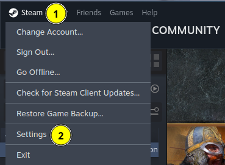
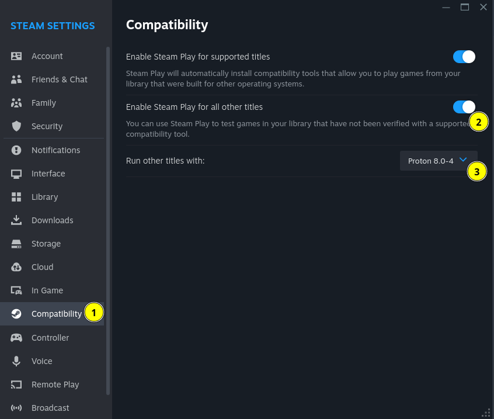

§ How do I play Age of Mythology: Retold on Linux?
§ Single player
- Install Steam (the Linux version).
- Start Steam and log in.
- Open the “Steam” menu (1), then “Settings” (2). 
- Go to the “Compatibility” section (1) and check the “Enable Steam Play for all other titles” box (2). You can leave the “Run other titles with” dropdown list (3) to its default value. 
- Now, AoM:R should be available in your Steam library as it would be if you were on Windows. Install the game.
- Start the game.
At this point, the game should work fine in single player mode. If you want to play online multiplayer, however, keep on reading.
§ Online multiplayer
Ignoring what follows won't prevent you from enjoying single player mode, but you'll encounter synchronization issues after a few seconds of playing online.
- Quit the game (it is important that you have started it at least once before the next step).
- Open a terminal.
- Execute the following commands (every single character is important, including the quotes):
cd "$(mktemp -d)"wget "https://download.microsoft.com/download/9/3/F/93FCF1E7-E6A4-478B-96E7-D4B285925B00/vc_redist.x64.exe"cabextract vc_redist.x64.execabextract a10- If you're using Steam from your distribution's package manager (
apt,pacman…) or SteamOS (eg. on the Steam Deck), run these commands: chmod u+w ~/.steam/steam/steamapps/compatdata/1934680/pfx/drive_c/windows/system32/ucrtbase.dllyes | cp ucrtbase.dll ~/.steam/steam/steamapps/compatdata/1934680/pfx/drive_c/windows/system32
- If you're using Steam from Flathub / Flatpak, run this command instead:
cp ucrtbase.dll ~/.var/app/com.valvesoftware.Steam/.local/share/Steam/steamapps/compatdata/1934680/pfx/drive_c/windows/system32/- Start the game again.
At this point, the game should work fine in online multiplayer as well. Once in the game, you shouldn't see any difference compared to when playing on Windows.
§ Troubleshooting
§ Acknowledgements
There's a very long list of people to thank for being able to play AoM on Linux. Of course, this would not have been possible without the efforts behind the Wine project since 1993 and behind the DXVK and Proton projects since 2017. But individuals from the AoE2 on Linux community have been helping a lot as well (yes, AoE2: this page is mostly adapted from the AoE2 on Linux page), through Wine's AppDB, ProtonDB, GitHub, Reddit, Discord…
Everything described on this page is the result of many people tireless attempts at making games work on Linux and their willingness to share their discoveries with everybody.
Thanks everyone, GL HF!
Last update (changelog) on 2024-08-28 (AoM:R advanced access)